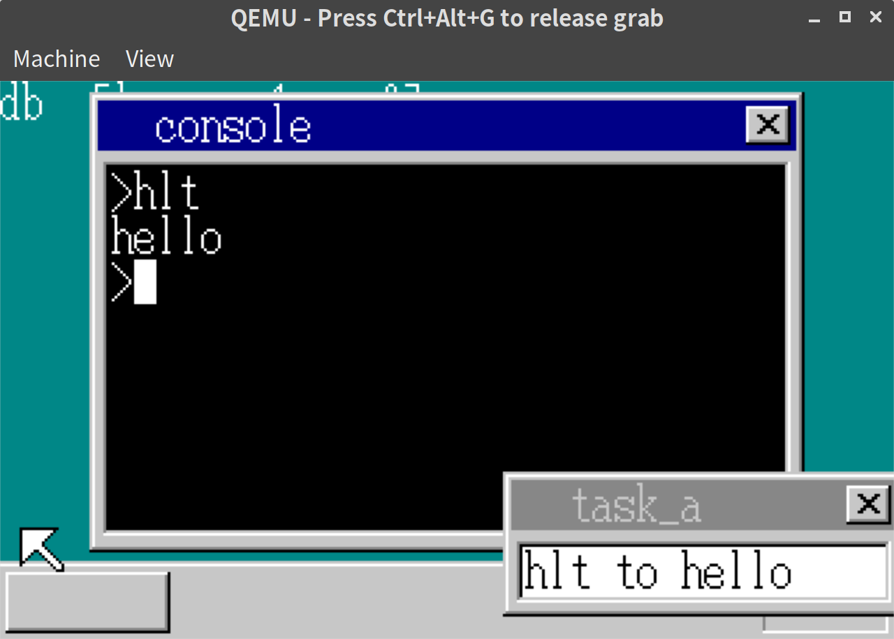
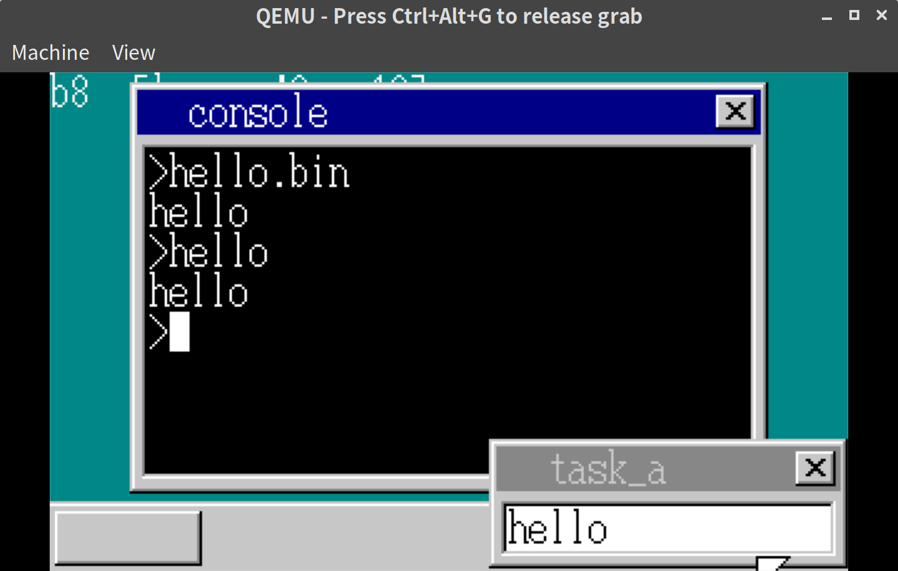
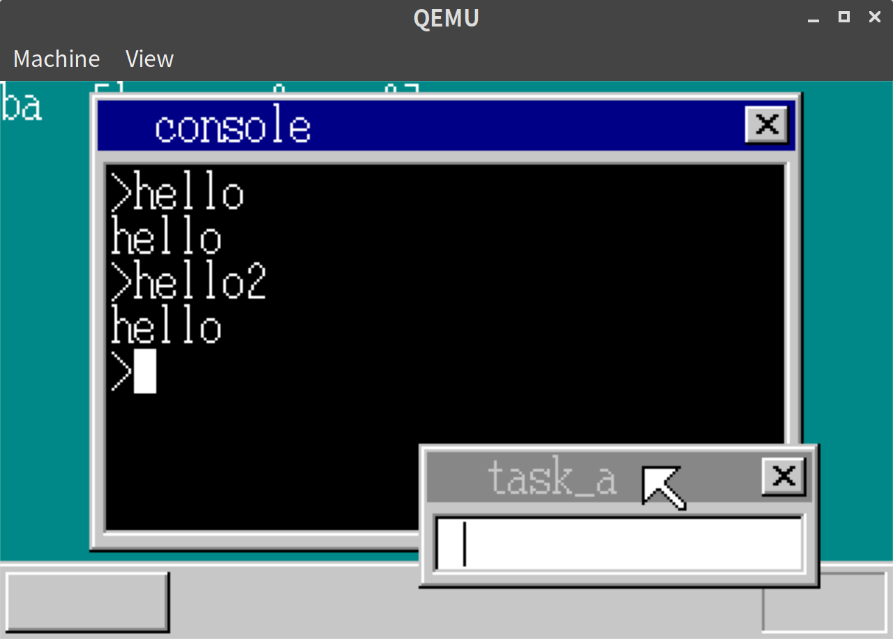

「30日でできる！OS自作入門」をRustで。20日目
「30日でできる！OS自作入門 」のC言語の部分をできるだけRustですすめてみる。今回は20日目の内容。
アプリケーション経由で文字を表示する
前回、アプリケーションの導入としてHLTするだけのasmファイルをアセンブル、hltコマンドとして実行できるようにした。
アプリケーションでできることを増やしていくにあたり、文字を表示してみる。
コンソールまわりのコード整理
コンソールまわりのコード整理をしたのでまずはそちらの説明をする。
// console.rs
pub struct Console {
pub cursor_x: isize,
pub cursor_y: isize,
pub cursor_c: Color,
pub cursor_on: bool,
pub sheet_index: usize,
pub sheet_manager_addr: usize,
}上記のようなstructを定義し、そのメソッドとして各コマンドを実装した。
おおまかな内容は変わっていないため、ここでは詳細には記載しない。
割り込みハンドラの追加
アプリケーション経由で文字を表示する場合、レジスタに表示したい文字を入れておいてシステムコールすることになる。
このシステムコールを割り込みで処理する。
// descriptor_table.rs
let idt = unsafe { &mut *((ADR_IDT + 0x40 * 8) as *mut GateDescriptor) };
*idt = GateDescriptor::new(interrupt_print_char as u32, 2 * 8, AR_INTGATE32);IDTに0x40として割り込みハンドラを追加した。
割り込み処理
// asm.rs
#[naked]
pub extern "C" fn interrupt_print_char() {
use crate::console::CONSOLE_ADDR;
unsafe {
asm!("STI" : : : : "intel");
asm!("PUSH 1" : : : : "intel");
asm!("AND EAX, 0xff" : : : : "intel");
asm!("PUSH EAX" : : : : "intel");
asm!("PUSH DWORD PTR [$0]" : : "i"(CONSOLE_ADDR) : : "intel");
asm!("CALL console_put_char" : : : : "intel");
asm!("ADD ESP, 12" : : : : "intel");
asm!("IRETD" : : : : "intel");
}
}CONSOLE_ADDR には、上記のConsole structの番地がはいっている。
コンソール側の処理修正
コンソール側の処理はfarjmpしていたところをfarcallにして、実行後、もどって処理を継続できるようにしている。
// console.rs
// consoleのメソッドをそのまま呼び出すようにしても動きそうだったが、wrapするほうが個人的に好みなので、そうしている。
#[no_mangle]
pub extern "C" fn console_put_char(console: &mut Console, char_num: u8, move_cursor: bool) {
console.put_char(char_num, move_cursor);
}
// 省略
// run_cmd内の処理
} else if cmd == "hlt" {
let finfo = search_file(b"hlt.bin");
if finfo.is_none() {
self.display_error("File Not Found");
return;
}
let finfo = finfo.unwrap();
let content_addr = memman.alloc_4k(finfo.size).unwrap() as usize;
finfo.load_file(content_addr, fat, ADR_DISKIMG + 0x003e00);
let gdt_offset = 1003; // 1,2,3はdesciptor_table.rsで、1002まではmt.rsで使用済
let gdt = unsafe { &mut *((ADR_GDT + gdt_offset * 8) as *mut SegmentDescriptor) };
*gdt = SegmentDescriptor::new(finfo.size - 1, content_addr as i32, AR_CODE32_ER);
farcall(0, gdt_offset * 8); // <- farcallに変更
memman.free_4k(content_addr as u32, finfo.size).unwrap();
self.newline();
} else {実行結果
hlt.asmを変更してhelloと表示するようにする。
MOV AL,'h'
INT 0x40
MOV AL,'e'
INT 0x40
MOV AL,'l'
INT 0x40
MOV AL,'l'
INT 0x40
MOV AL,'o'
INT 0x40
RETFfar callされるのでfar returnするようにしている。
hltと入力してエンターキーを押すと、以下のようにコンソール画面にhelloと表示された。

どんなファイル名でも呼び出せるようにする
これまで、hltというコマンドとしてhlt.binを呼び出していたが、他にも.binファイルを追加したらそのファイル名で呼び出せるようにする。
// console.rs
fn run_cmd(&mut self, cmdline: [u8; MAX_CMD], memtotal: usize, fat: &[u32; MAX_FAT]) {
self.cursor_x = 8;
let cmdline_strs = cmdline.split(|s| *s == 0 || *s == b' ');
let mut cmdline_strs = cmdline_strs.skip_while(|cmd| cmd.len() == 0);
let cmd = cmdline_strs.next();
if cmd.is_none() {
self.display_error("Bad Command");
return;
}
let cmd = cmd.unwrap();
let cmd_str = from_utf8(&cmd).unwrap();
if cmd_str == "mem" {
self.cmd_mem(memtotal);
} else if cmd_str == "clear" {
self.cmd_clear();
} else if cmd_str == "ls" {
self.cmd_ls();
} else if cmd_str == "cat" {
self.cmd_cat(cmdline_strs, fat);
} else {
// 任意のコマンドを処理する関数を追加
self.cmd_app(&cmd, fat);
}
}
fn cmd_app<'a>(&mut self, filename: &'a [u8], fat: &[u32; MAX_FAT]) {
let memman = unsafe { &mut *(MEMMAN_ADDR as *mut MemMan) };
let mut finfo = search_file(filename);
// 見つからなかったら、末尾に .bin をつけて再度探してみる
if finfo.is_none() && filename[filename.len() - 2] != b'.' {
let mut filename_ext = [b' '; MAX_CMD + 4];
let filename_ext = &mut filename_ext[0..(filename.len() + 4)];
filename_ext[..filename.len()].copy_from_slice(filename);
filename_ext[filename.len()] = b'.';
filename_ext[filename.len() + 1] = b'b';
filename_ext[filename.len() + 2] = b'i';
filename_ext[filename.len() + 3] = b'n';
finfo = search_file(filename_ext);
}
if finfo.is_none() {
self.display_error("Bad Command");
return;
}
let finfo = finfo.unwrap();
let content_addr = memman.alloc_4k(finfo.size).unwrap() as usize;
finfo.load_file(content_addr, fat, ADR_DISKIMG + 0x003e00);
let gdt_offset = 1003; // 1,2,3はdesciptor_table.rsで、1002まではmt.rsで使用済
let gdt = unsafe { &mut *((ADR_GDT + gdt_offset * 8) as *mut SegmentDescriptor) };
*gdt = SegmentDescriptor::new(finfo.size - 1, content_addr as i32, AR_CODE32_ER);
farcall(0, gdt_offset * 8);
memman.free_4k(content_addr as u32, finfo.size).unwrap();
self.newline();
}実行結果
上記のhlt.asmをhello.asmとして、hello.binにアセンブルするようにMakefileを変更した結果、以下の通り、helloでもhello.binでも実行できるようになった。

システムコールの汎用化
文字列を表示するようなシステムコールを追加する。
IDTが枯渇しないように、IDTに追加していく形ではなく、0x40の割り込みハンドラ側で処理を分岐させる。
// descriptor_table.rs
let idt = unsafe { &mut *((ADR_IDT + 0x40 * 8) as *mut GateDescriptor) };
// 名前をinterrupt_bin_apiに変更
*idt = GateDescriptor::new(interrupt_bin_api as u32, 2 * 8, AR_INTGATE32);// asm.rs
#[naked]
pub extern "C" fn interrupt_bin_api() {
unsafe {
asm!("STI
PUSHAD
PUSHAD
CALL bin_api
ADD ESP, 32
POPAD
IRETD" : : : : "intel");
}
}bin_apiではEDXの値でどの処理を行うかを決めるようにする。
// console.rs
#[no_mangle]
pub extern "C" fn bin_api(
_edi: i32,
_esi: i32,
_ebp: i32,
_esp: i32,
ebx: i32,
edx: i32,
ecx: i32,
eax: i32,
) {
let cs_base = unsafe { *(CS_BASE_ADDR as *const usize) };
let console_addr = unsafe { *(CONSOLE_ADDR as *const usize) };
let console = unsafe { &mut *(console_addr as *mut Console) };
if edx == 1 {
// 1文字出力
console.put_char(eax as u8, true);
} else if edx == 2 {
// 0がくるまで1文字ずつ出力
let mut i = 0;
loop {
let chr = unsafe { *((ebx as usize + i as usize + cs_base) as *const u8) };
if chr == 0 {
break;
}
console.put_char(chr, true);
i += 1;
}
} else if edx == 3 {
// 指定した文字数出力
for i in 0..ecx {
let chr = unsafe { *((ebx as usize + i as usize + cs_base) as *const u8) };
console.put_char(chr, true);
}
}
}これを使って、以下のhello.asm、hello2.asmを実行する
; hello.asm
[BITS 32]
MOV ECX,msg
MOV EDX,1
putloop:
MOV AL,[CS:ECX]
CMP AL,0
JE fin
INT 0x40
ADD ECX,1
JMP putloop
fin:
RETF
msg:
DB "hello",0; hello2.asm
[BITS 32]
MOV EDX,2
MOV EBX,msg
INT 0x40
RETF
msg:
DB "hello",0hello.asmはEDXが1、hello2.asmはEDXが2になっている。
実行結果
実行してみると、以下の通りhelloでもhello2でもhelloという出力が得られた。

20日目は以上となる。ここまでの内容のコードはyoshitsugu/hariboteos_in_rustのday20としてタグを打ってある。